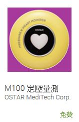

| Janas Lee 的網站 |
| Android 學習資源 | 化學筆記 | 推薦書單 | 關於 Janas Lee |
Janas Lee 來自嘉義縣布袋鎮。是個喜歡 3C 產品的糟老頭。雖然年紀都一大把了，還是不減學習新的資訊系統的熱情。目前的學習目標是行動及穿戴裝置 App 的開發。
學歷 : 中山醫學大學營養學系，東海大學資訊工程研究所畢業
經歷 : 曾任職於資拓宏宇、資通電腦、神通電腦、緯創軟體、凌群電腦、玉山雲端運算、臺灣雲端運算等公司。
專長 : Android App 、Java 、C#、SQL、 HTML5、JavaScript 程式開發。
現況 : 目前是無業遊民，只求不要升格為街友。
| 有支援 USB OTG 功能的 Android 手機或平板接上讀卡機後可讀取健保卡資料。 目前只有支援 EZ100PU 讀卡機，也就是去戶政事務所辦理自然人憑證時所贈送的那種。 | 搭配 OSTAR P2 BLE 血壓機的健康管理 APP | 連接源星生醫 P2 心臟頻譜血壓計及 ACER 20吋以上大型平板，結合成一套心臟建康照護系統。可接讀取健保卡資料。 | 手機即可透過 USB 來控制OSTAR心臟頻譜血壓計，並可將量測資料直接傳送到雲端資料庫。可掃描身分證條碼作為ID | ||||
| 搭配源星生醫 OSTAR P2 心臟頻譜血壓計使用， 適用於 7 吋~10 吋 Android 平板。可接RFID讀卡機做身份辨識。 |  | 搭配 OSTAR M100 做定壓量測心跳波形圖，可供中醫師把脈診斷的參考。 | OSTAR 客戶的血壓、血氧、脈搏、體重等健康資訊的管理及推播 App | 營養師常用的術語及醫學名詞 |